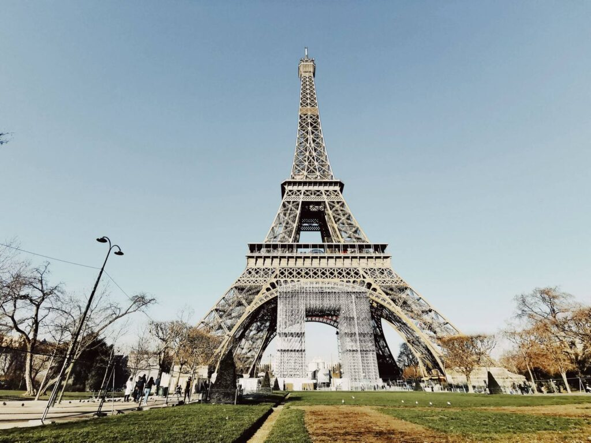
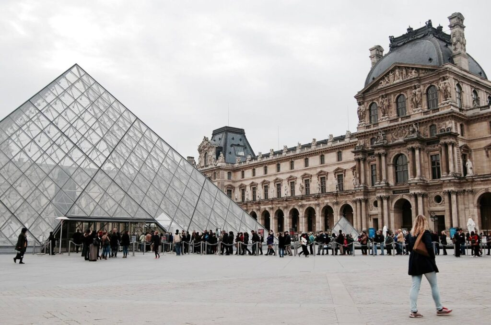
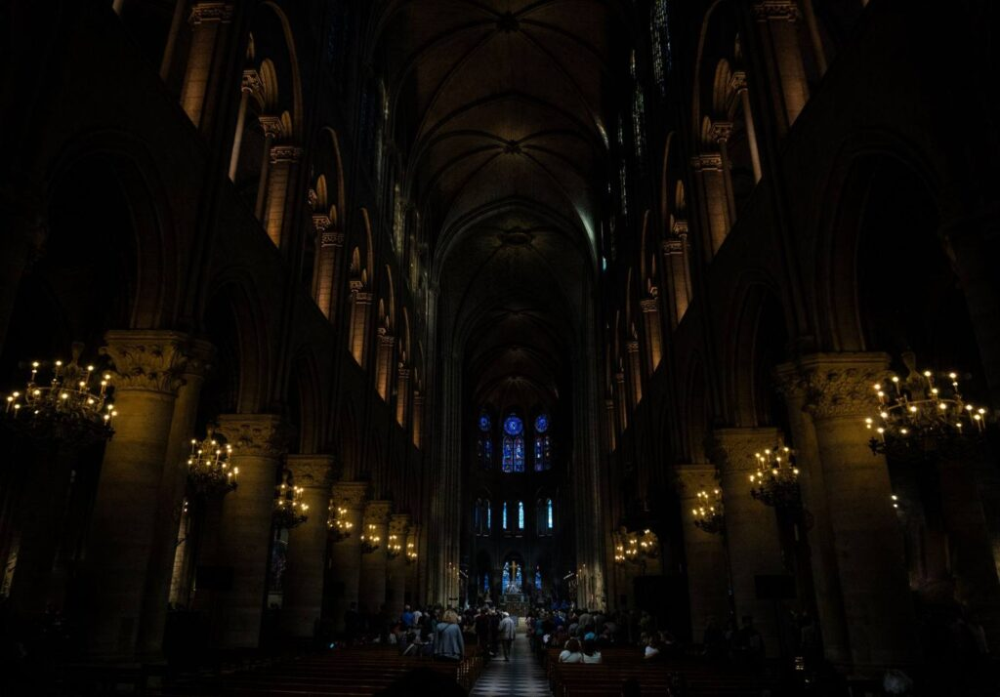
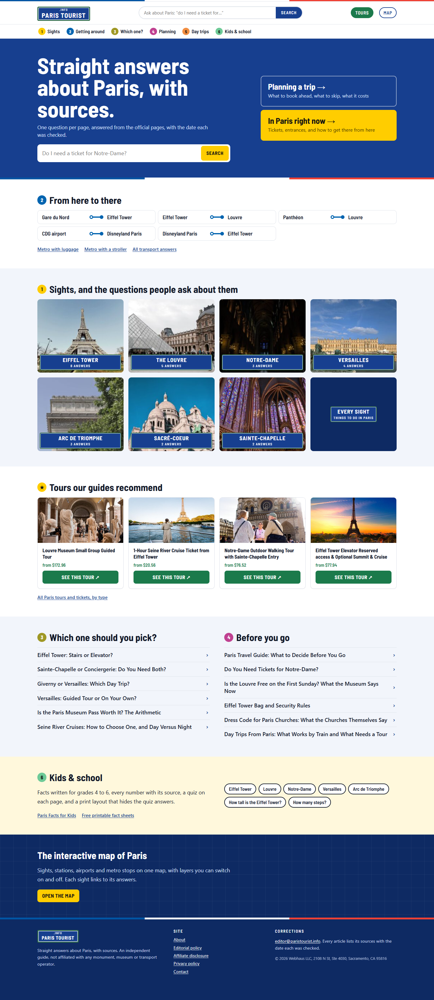

1
2
3
4
5
6
Sights
Getting around
Which one?
Planning
Day trips
Kids & school
Paris · one question at a time
Paris has a thousandopinions.
This site hassources.
Independent reference · Every answer cited
Straight answersabout Paris,with sources.
One question per page, answered from the official pages, with the date each was checked.
Planning a trip
What to book ahead, what to skip, what it costs
In Paris right now
Tickets, entrances, and how to get there from here
1
2
3
4
5
6
Sights
Getting around
Which one?
Planning
Day trips
Kids & school
Next stop
Ask about Paris
SEARCH
1
Sights2
Getting around3
Which one?
paristourist.info/notre-dame-tickets-needed/
Do You Need Tickets for Notre-Dame?
Answered from the official page
Source cited on the page
Date checked, shown with the answer
Answered · source cited · date checked
From here to there
Gare du Nord
Eiffel Tower
paristourist.info/gare-du-nord-to-eiffel-tower/
Gare du Nord Eiffel Tower
Route from the official transport pages
Source cited, date checked
Answered · source cited · date checked

paristourist.info/eiffel-tower-stairs-or-elevator/
Eiffel Tower: Stairs or Elevator?
Both options, side by side
Source cited, date checked
Also in Which one? Is the Paris Museum Pass worth it?
Answered · source cited · date checked
1
Sights, and the questions people ask about them
Eiffel Tower
0 answers

The Louvre
0 answers
Versailles
0 answers

Notre-Dame
0 answers
Seven sight guides · every answer cited · every date checked
paristourist.info

.INFOPARIS TOURIST
paristourist.info
Straight answers about Paris, with sources.
One question per page · Every answer cited · Every date checked
a Webhaus site